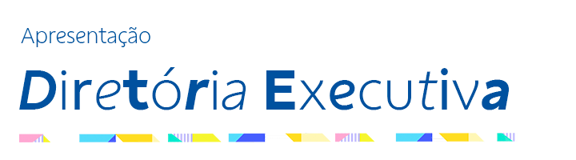
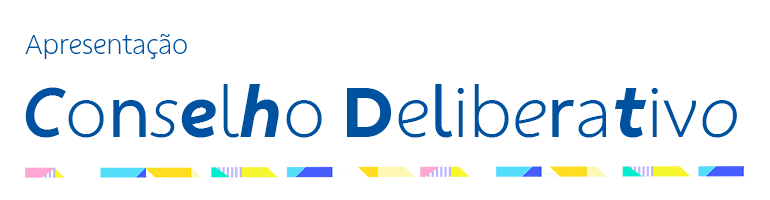

<html lang="pt-br"><head>
  <meta charset="utf-8">
  <title>Relatório 2023 - Início</title>
  <meta name="viewport" content="width=device-width, initial-scale=1">
  <link href="https://cdn.jsdelivr.net/npm/bootstrap@4.0.0/dist/css/bootstrap.min.css" rel="stylesheet">
  <link rel="stylesheet" href="https://cdnjs.cloudflare.com/ajax/libs/aos/2.3.4/aos.css">
  <link rel="stylesheet" href="../css/style.css">
  <link rel="shortcut icon" href="../images/logos/favicon.ico" type="image/x-icon">
  <style type="text/css" id="operaUserStyle"></style></head>
    <body >
        <header class="header-area "> <!--overlay-->
            <nav class="navbar navbar-expand-md navbar-dark">
                <div class="container-nav">
                    <a href="../html/home.html" class="navbar-brand"></a>
                <button type="button" class="navbar-toggler collapsed" data-toggle="collapse" data-target="#main-nav" aria-expanded="false">
                    <span class="menu-icon-bar"></span>
                    <span class="menu-icon-bar"></span>
                    <span class="menu-icon-bar"></span>
                </button>
                <div id="main-nav" class="navbar-collapse collapse">
                <ul class="navbar-nav ml-auto">
                    <li><a href="#" class="nav-item nav-link active">Apresentação</a></li>
                    <li><a href="./acoes-de-gestao.html" class="nav-item nav-link">Ações de Gestão</a></li>
                    <li class="dropdown">
                    <a href="#" class="nav-item nav-link" data-toggle="dropdown">Resultado<i class="fa-solid fa-arrow-down"></i></a>
                    <div class="dropdown-menu">
                        <a href="../pdfs/RELATÓRIO 2023 - análise economico financeira - 64 - 101.pdf" target="_blank" class="dropdown-item">Análise Econômico-financeira</a>
                        <a href="../pdfs/RELATÓRIO 2023 -  Demonstrações contábeis - 102-147.pdf" target="_blank" class="dropdown-item">Demonstrações Contábeis</a>
                        
                    </div>
                </li>
                <li class="dropdown">
                    <a href="#" class="nav-item nav-link" data-toggle="dropdown">Pareceres <i class="fa-solid fa-arrow-down"></i></a>
                    <div class="dropdown-menu">
                        <a href="../pdfs/Relatório do Auditor - CASSI 31.12.2023__Assinado_.pdf" class="dropdown-item">Relatório do Auditor Independente</a>
                        <a href="../pdfs/RELATÓRIO 2023 - parecer CF.pdf" class="dropdown-item">Conselho Fiscal</a>
                        <a href="../pdfs/RELATÓRIO 2023 - parecer CD.pdf" class="dropdown-item">Conselho Deliberativo</a>
                
                    </div>
                </li>

                <li><a href="./votacao.html" class="nav-item nav-link">Votação</a></li>

                <!-- <li class="dropdown"> VOTAÇÃO
                    <a href="#" class="nav-item nav-link" data-toggle="dropdown">Votação˅</a>
                    <div class="dropdown-menu">
                        <a href="#" class="dropdown-item">O que estou votando?</a>
                        <a href="./votacao.html" class="dropdown-item">Como votar</a>
                
                    </div>
                </li> --> 
                
                </ul>
                </div>
                </div>
            </nav>
            <section class="banner-area">
                <div class="contayner">
                    <div class="banner-content" data-aos="zoom-out-up" data-aos-duration="1000">
                        
                        
                        <h4 style="color: #fff; width: 70%; margin: auto;">Use o menu superior para visualizar os diferentes capítulos do documento ou clique no botão abaixo para baixar o Relatório completo em PDF</h4>
                        <a href="#content" class="button button-primary">Download do Relatório <i class="fa-solid fa-download"></i></a> 
                    </div>
              
                </div>
            </section>
        </header>
   

    <section class="presentation-area">
        <div class="contayner">
            <div class="presentation-content" data-aos="slide-up" data-aos-duration="1500">
              <h2 class="section-title" style="color: #00529b;">Apresentação<div class="title-border"></div></h2>
              <p class="presentation-message">Leia as mensagens dos órgãos de governança da CASSI sobre as principais ações e resultados de 2023 clicando nos botões abaixo.</p>
              <div class="presentation-button-area">
                <div class="presentation-buttons">
                    <button class="presentation-buttons--item" id="executive-directors">Diretoria Executiva</button>     
                    <button class="presentation-buttons--item" id="deliberative-council">Conselho Deliberativo</button>     
                </div>
                <button class="expedient-button" id="team-file">Ver Expediente</button>  
              </div>         
            </div>
        </div>
    </section>


    <section class="management-area">
        <div class="contayner">
            <div class="management-content"  data-aos="fade-right" data-aos-duration="1500">
                <div class="management-content--left">
                    <h2 class="section-title" style="color: #fff;">Ações de Gestão<div class="title-border-variant"></div></h2>
                    <div class="management-group">
                        <ul class="management-group-list">
                            <li class="management-group-list--item"><a href="./acoes-de-gestao/indicadores.html">Indicadores de Gestão</a></li>
                            <li class="management-group-list--item"><a href="./acoes-de-gestao/saude.html">Saúde</a></li>
                            <li class="management-group-list--item"><a href="./acoes-de-gestao/rede-credenciada.html">Rede Credenciada</a></li>
                            <li class="management-group-list--item"><a href="./acoes-de-gestao/sustentabilidade.htmle">Sustentabilidade</a></li>
                        </ul>
                        <ul class="management-group-list">
                            <li class="management-group-list--item"><a href="./acoes-de-gestao/experiencia-participante.html">Experiência do Participante</a></li>
                            <li class="management-group-list--item"><a href="./acoes-de-gestao/parcerias-estrategicas.html">Parcerias Estratégicas</a></li>
                            <li class="management-group-list--item"><a href="./acoes-de-gestao/seguranca.html">Segurança</a></li>
                            <li class="management-group-list--item"><a href="./acoes-de-gestao/responsabilidade-social.html">Responsabilidade Social, Ambiental e de Governança</a></li>
                        </ul>
                    </div>
                </div>
                <div class="management-content--right">
                    
                </div>
            </div>
        </div>
    </section>

    <section class="results-area">
        <div class="contayner">
            <div class="results-content" data-aos="fade-left" data-aos-duration="1500">
                <div class="results-content--left">
                    
                </div>
                <div class="results-content--right">
                    <h2 class="section-title">Resultados<div class="title-border"></div></h2>
                    <p class="section-description">Aqui você encontra balanço conforme as regras contábeis brasileiras e os fatos que impactaram o resultado da CASSI em 2023.</p>
                    <div class="results-button-group">
                        <a class="results-button-item" href="../pdfs/RELATÓRIO 2023 - análise economico financeira - 64 - 101.pdf" target="_blank">Análise Econômico-financeira </a>
                        <a class="results-button-item" href="../pdfs/RELATÓRIO 2023 -  Demonstrações contábeis - 102-147.pdf" target="_blank">Demonstrações Contábeis </a>
                    </div>
                </div>
               </div>
        </div>
    </section>


    <section class="opinions-area">
        <div class="contayner">
            <div class="opinions-content" data-aos="slide-up" data-aos-duration="1500">
                <h2 class="section-title">Pareceres</h2>
                <div class="opinions-button-group">
                    <a class="opinions-button-item" href="../pdfs/RELATÓRIO 2023 - parecer CF.pdf" target="_blank">Conselho Fiscal</a>
                    <a class="opinions-button-item" href="../pdfs/RELATÓRIO 2023 - parecer CD.pdf" target="_blank">Conselho Deliberativo</a>
                </div>
                <div class="report-button-area">
                    <a class="report-button" href="../pdfs/Relatório do Auditor - CASSI 31.12.2023__Assinado_.pdf" target="_blank">Relatório do Auditor Independente</a>
                </div>
            </div>
        </div>
    </section>

    <section class="votation-area">
        <div class="contayner">
            <div class="votation-content" data-aos="fade-right" data-aos-duration="1500">
                <div class="votation-content--left">
                    <h2 class="section-title">Votação<div class="title-border-variant" style="width: 15%;"></div></h2>
                    <p class="section-description">A
                        votação do Relatório
                        2023 será
                        de 6 a 17 de maio de 2024
                        . Participam funcionários da ativa e aposentados do Banco do Brasil associados à CASSI em pleno gozo de seus direitos junto ao Plano de Associados em 31/1/2024. </p>
                    <div class="votation-button-group">
                        <button class="votation-button">Como votar</button>
                        <button class="votation-button" disabled>Painel de Votação</button>
                    </div>
                </div>

                <div class="votation-content--right">
                    
                </div>
            </div>
        </div>
    </section>


    <div id="footer-placeholder"></div>

    <!--MODALS-->
    <div id="directors-modal" class="modal">
        <div class="modal-content">
          <span class="close">&times;</span>
          <!--  -->
          <div class="modal-text">
            <h3 >Mensagem da Diretoria Executiva</h3>
            <div class="modal-paragraph">
                <p>Inclusão social, mudanças em processos para possibilitar uma visão 360º da jornada do participante e ampliação 
                    na oferta de serviços de saúde marcaram 2023 na CASSI. </p>
            </div>
            <div class="modal-paragraph">
                <h4>Conferências Cidadãs</h4>
                <p>Começamos a construir a Política de Relacionamento com as Pessoas com Deficiência. Ouvimos participantes 
                    e profissionais de saúde para levantar necessidades e iniciativas voltadas à inclusão, à promoção da saúde e à 
                    melhoria da qualidade de vida dessa população. Ao promover as Conferências Cidadãs em todas as unidades 
                    da federação, não apenas vamos elaborar uma política aderente às necessidades concretas desse público, mas 
                    reafirmamos o nosso compromisso da participação social na CASSI. </p>
            </div>
            <div class="modal-paragraph">
                <h4>Participante no centro</h4>
                <p>Concluímos a implementação da nova ferramenta de gestão de relacionamento com nossos participantes (CRM, 
                    do inglês Customer Relationship Management), que possibilitou integrar em um mesmo ambiente todos os 
                    canais de relacionamento. Isso permite responder de forma mais rápida e eficiente, enxergar mais facilmente 
                    as necessidades dos participantes e se antecipar a elas, identificar e corrigir problemas com maior velocidade e, 
                    assim, aprimorar os serviços oferecidos. Nessa linha, a Central CASSI, canal de atendimento 24 horas, também 
                    criou um modelo de atuação buscando excelência no relacionamento e alcançou 80% de resolutividade no 
                    primeiro contato, percentual acima do mercado. Outro fato que reflete o esforço na melhoria dos serviços foi o 
                    destaque obtido pelo app CASSI, o mais bem avaliado entre os aplicativos de operadoras de saúde na Apple Store 
                    e o segundo melhor na Google Play. </p>
            </div>
            <div class="modal-paragraph">
                <h4>Transformação digital</h4>
                <p>Implementamos o uso de inteligência artificial para autorização de procedimentos, adotamos biometria 
                    (reconhecimento facial ou digital) e implantamos a dupla autenticação para acessar serviços logados. Também 
                    investimos na simplificação das interações no ambiente digital, na manutenção e estabilidade dos sistemas e na 
                    ampliação das opções de autosserviço. Tudo isso permite um atendimento mais ágil e confere maior integridade 
                    e confidencialidade aos dados, gerando uma experiência digital ainda mais segura para os participantes.</p>
            </div>
            <div class="modal-paragraph">
                <h4>Proximidade com associados</h4>
                <p>Buscamos maior proximidade com os associados, intensificando a presença da CASSI em eventos promovidos 
                    pelo Banco do Brasil e entidades representativas dos funcionários. Participamos de todas as posses de novos 
                    funcionários BB realizadas em 2023, estimulando a adesão ao Plano de Associados e orientando sobre benefícios. 
                    Com isso, 90% dos que tomaram posse no Banco no ano aderiram à CASSI, resultando no ingresso de 2,5 
                    mil associados e dependentes. Ampliamos a oferta de planos para familiares, com o lançamento do CASSI Vida 
                    Porto Alegre, o décimo primeiro dessa linha de planos regionais, com mensalidades mais acessíveis. Essas ações, 
                    associadas a contatos com participantes com planos cancelados por inadimplência e à negociação de dívidas, 
                    aumentaram a retenção e reduziram a quantidade de cancelamentos em relação a 2022.</p>
            </div>
            <div class="modal-paragraph">
                <h4>Rede de atendimento</h4>
                <p>A quantidade de prestadores credenciados cresceu 10% em comparação com o ano anterior, sendo que mais 
                    da metade dos 2,3 mil novos credenciamentos ocorreu em cidades com dificuldade de rede. O percentual de 
                    municípios com participantes que contam com rede direta subiu para 81,95%. Importante ressaltar que esses 
                    municípios concentram 96% da população assistida.</p>
            </div>
            <div class="modal-paragraph">
                <h4>Atenção Primária à Saúde</h4>
                <p>Outro avanço foi a ampliação dos serviços de Atenção Primária à Saúde (APS). Concluímos a reforma e ampliação 
                    da CliniCASSI Brasília e relocalização da CliniCASSI Fortaleza, que contam com espaços mais adequados, 
                    acolhedores e com aumento da capacidade de atendimento. Outras obras de melhoria das CliniCASSI iniciaram 
                    em 2023 e devem ser concluídas no primeiro semestre de 2024: São Luís (MA), Copacabana (RJ), Belém (PA), São 
                    Paulo (SP). A oferta de APS também foi ampliada na modalidade de atendimento remoto, por chamada de vídeo, 
                    opção encontrada para dar acesso à atenção primária a 138 mil participantes que vivem em cidades onde não há 
                    estruturas físicas para atendimento presencial de APS. <br> <br>
                    Avançamos ainda no conhecimento epidemiológico, com a produção de estudos detalhados das principais causas 
                    de adoecimento da população assistida. Isso permite analisar com mais precisão as necessidades para adequar 
                    a oferta de serviços e entender a relação entre os casos de maior complexidade, relacionados especialmente 
                    aos doentes crônicos, e as despesas assistenciais. Os resultados apontam, por exemplo, os gastos evitados no 
                    monitoramento dos participantes com doenças crônicas, para controle dos eventuais agravos. Com a ampliação 
                    da população assistida pela APS, será possível reduzir o risco de agravamento das condições de saúde e ter menor 
                    impacto nas despesas com internação e procedimentos de maior complexidade que elevam o custo assistencial.
                    <br><br>Esse é um dos desafios da CASSI onde a população a partir de 60 anos, faixa em que as demandas por serviços 
                    de saúde aumentam, representa mais de 30% da carteira. enquanto o percentual médio de pessoas com mais de 
                    60 anos, no mercado de saúde, é de 15%. A avaliação do risco populacional, portanto, nos permite enfrentar de 
                    forma mais inteligente essa realidade, ter maior previsibilidade de despesas e buscar iniciativas que contribuam 
                    para o equilíbrio financeiro.</p>
            </div>
            <div class="modal-paragraph">
                <h4>Resultados</h4>
                <p>Em 2023, as despesas assistenciais somaram R$ 6.866 milhões, um aumento de 6,5% em relação ao ano anterior, 
                    especialmente pelo incremento dos gastos no Plano de Associados, que tiveram um acréscimo de R$ 299 milhões 
                    em relação a 2022. Isso levaria a CASSI a um déficit de R$ 448 milhões em 2023, evitado pelo ingresso de receitas 
                    extraordinárias. A mais significativa em termos de valores foi o entendimento para o pagamento de contribuições 
                    patronais sobre reclamatórias trabalhistas, devidas desde 2010 pelo Banco do Brasil. A conclusão da apuração dos 
                    valores, por meio de estudo técnico realizado por profissionais da Caixa de Assistência e do BB em 2023, apurou o 
                    montante a ser repassado para a CASSI em R$ 339,5 milhões, já provisionados no BB e na CASSI. Esse entendimento 
                    produziu efeitos em outros eventos não recorrentes, permitindo fecharmos o ano com superávit de R$ 20 milhões. <br> <br>
                    Nas páginas a seguir apresentamos a explicação detalhada das receitas e despesas e os principais atos da gestão 
                    da Caixa de Assistência ao longo do ano.<br><br>
                    O ano de 2024 será igualmente desafiador para a CASSI, que está elaborando um Plano de Sustentabilidade, a 
                    exemplo do que foi construído em 2023, com ações de gestão para promover o contínuo equilíbrio econômicofinanceiro da operadora e a adoção de ações emergenciais, em caso de acionamento da contingência financeira, 
                    visando garantir a atenção integral à saúde dos beneficiários. É importante ressaltar que o consumo de reservas 
                    constituídas nos primeiros anos do modelo de custeio vigente já era previsto no atual momento, até a elaboração 
                    de um novo modelo. E, mesmo com esse consumo, a CASSI fechou 2023 contando com mais de R$ 1,3 bilhão em 
                    reservas livres, superiores aos ativos garantidores exigidos pela ANS.<br><br>
                    Em cumprimento ao que determina o inciso III do Artigo 11 da Lei nº 9.613, de março de 1998, CASSI declara não 
                    ter havido, em 2023, ocorrências de operações suspeitas a serem informadas ao COAF</p>
            </div>
          </div>
          <button id="closeModalBtn">Voltar</button>
        </div>
    </div>

    <div id="deliberative-modal" class="modal">
        <div class="modal-content">
          <span class="close">&times;</span>
          <!--  -->
          <div class="modal-text">
            <h3 >Mensagem do Conselho Deliberativo</h3>
            <p>
                Durante o ano de 2023, a CASSI vivenciou alguns momentos marcantes em seus 80 anos de história, a exemplo da realização de obras simultâneas em seis CliniCASSI para a implementação de melhorias que proporcionarão ambientes mais acolhedores e agradáveis para atender às necessidades da nossa população. Essa realização exigiu o redimensionamento de equipes internas na área de engenharia, arquitetura, e reforço nas áreas de compras e contratos para prospecção de prestadores para projetar e executar as reformas, ampliações e mudanças de endereço dos serviços próprios. Temos ciência de que investimentos desse porte impactam a gestão, mas estamos convencidos dos grandes benefícios para nossos participantes, os quais poderão desfrutar de uma experiência de atendimento com mais conforto, qualidade e comodidade.

Dessas obras iniciadas em 2023, duas foram concluídas, em Brasília e Fortaleza, e as demais com previsão de finalização no primeiro semestre de 2024. Ao aprovar essas ações em CliniCASSI estratégicas, pelo volume de participantes que terá capacidade de acompanhar, este Conselho reafirma o papel fundamental exercido pelos serviços próprios na oferta de um modelo assistencial capaz de promover melhores resultados em saúde, prevenir doenças e gerar qualidade de vida.  <br><br>

Também por esse motivo aprovamos a contratação de médicos especialistas para aquelas CliniCASSI cuja estrutura física permite o atendimento de nível secundário, certos de que a presença de cardiologistas, ginecologistas, endocrinologistas, psiquiatras e pediatras potencializam nossos serviços próprios. A contratação de especialistas permite que os participantes acompanhados pela Atenção Primária à Saúde (APS), quando precisam de avaliação especializada, recebam atendimento por parte de profissionais de confiança, que seguem os melhores e mais adequados protocolos de saúde. Essa abordagem favorece o encaminhamento à rede credenciada de forma mais assertiva, com uso mais eficiente dos serviços de saúde, melhorando a qualidade e presteza do atendimento.<br><br>

Para atender àqueles participantes que moram em cidades menores, onde não há CliniCASSI, de forma a que possam também ser acompanhados por equipes de APS - Atenção Primária à Saúde, aprovamos a implantação de atendimento remoto, por meio de chamada de vídeo. Esperamos que o número de associados acompanhados pela APS cresça, seja por meio das CliniCASSI ou das equipes remotas, considerando ser esse um diferencial da CASSI na melhoria da saúde de seus associados e familiares, por meio do cuidado integral focado na prevenção e manutenção da saúde, unificando melhor a gestão das despesas assistenciais com o atendimento resolutivo e de excelência.<br><br>

Em 2023 avançamos também no combate a fraudes, contando com tecnologia e análise de dados para identificar possíveis tentativas de cobranças indevidas por prestadores, tornar mais eficientes os processos e otimizar recursos, bem como em melhorias no relacionamento com os participantes ao integrar os canais e identificar mais rapidamente suas necessidades e soluções possíveis.<br><br>

Com a responsabilidade de buscar novas receitas, a CASSI lançou o décimo terceiro plano para familiares, o regional CASSI Vida Porto Alegre, e em conjunto com o Banco do Brasil, prosseguiu com as discussões sobre a contribuição patronal incidente sobre verbas pagas em demandas judiciais trabalhistas movidas em desfavor do BB, nas quais a CASSI não figurou como parte, sendo aprovado na Governança de ambas as Instituições estudo técnico que apurou os valores corrigidos a serem repassados à CASSI. O reconhecimento contábil desse direito impactou significativamente o resultado, contribuindo para reversão do déficit previsto em superávit de R$ 20 milhões.<br><br>

Outro benefício para os associados foi o fim do gatilho que previa aumento na coparticipação diante da elevação da sinistralidade no Plano de Associados. Entendendo que a coparticipação tem papel regulador, para uso mais consciente do plano, e não de gerador de receitas, o Conselho Deliberativo aprovou a proposta de manter inalterados os percentuais de 10% e 30% para consultas, exames e terapias seriadas.<br><br>

Destacamos ainda a autorização para um ajuste organizacional na Auditoria Interna da CASSI, que ampliou a sua capacidade de identificar riscos, irregularidades e fraudes, papel essencial na governança e na gestão corporativa. As recomendações de auditoria aprimoram processos e controles internos e as ações geradas por essas recomendações contribuem para monitoramento do cumprimento de políticas e regulamentos, avaliação da governança, promoção da transparência e prestação de contas. Ela atua de forma independente da gestão, com um olhar do Conselho Deliberativo para dentro das áreas e processos da CASSI. Dessa forma, a Auditora oferece apoio à tomada de decisões estratégicas por meio de análises objetivas e independentes, contribuindo significativamente para a eficácia operacional, a conformidade legal e a confiança das partes interessadas na organização. Contar com uma estrutura de Auditoria adequada ao porte da Instituição, portanto, confere à CASSI maior segurança de estar atuando em conformidade com a legislação, os normativos internos e o Estatuto da CASSI.<br><br>

Mais uma ação importante que a CASSI iniciou em 2023 foi a construção de uma Política de Relacionamento com as Pessoas com Deficiência, em conjunto com os participantes de todos os estados do país e do Distrito Federal, lideranças de entidades representativas dos associados e o Banco do Brasil. Foram realizadas 18 Conferências Cidadãs, que contaram com mais de mil pessoas presencialmente e quase 300 online. Em 2024, essas reuniões continuam até cumprir 100% do território brasileiro.

Durante as conferências cidadãs, são eleitos dois delegados por estado, que debaterão o conteúdo da proposta e validarão o desenho da política na Conferência Nacional, programada para ocorrer em junho de 2024, em Brasília. O lançamento da política está previsto para o dia 21 de setembro de 2024, que é o Dia Nacional de Luta da Pessoa com Deficiência. A construção da política para pessoas com deficiência é essencial para garantir a inclusão, a igualdade de oportunidades e o respeito pelos direitos humanos de todos.<br><br>

Por fim, focados na alocação eficaz de recursos, no equilíbrio das contas da entidade, na melhoria contínua dos serviços prestados e cientes da necessidade de definir metas claras, participamos ativamente da revisão do Planejamento Estratégico 2023/2027 e das readequações das Iniciativas Estratégicas Institucionais.<br><br>


Todas essas ações e iniciativas destacadas aqui nos fazem acreditar que a CASSI caminhou de forma sólida, responsável, para cumprir a missão de “promover uma vida melhor aos nossos participantes, por meio da atenção integral à saúde”. Ainda que 2024 represente desafios, especialmente do ponto de vista da sustentabilidade econômico-financeira, estamos certos de que a Instituição conta com corpo técnico atento, preparado e capaz de apresentar a alternativas viáveis e inovadoras também na busca do equilíbrio econômico-financeiro.
            </p>
          </div>
          <button id="closeModalBtn2">Voltar</button>
        </div>
    </div>

    <div id="file-modal" class="modal">
        <div class="modal-content">
          <span class="close">&times;</span>
          <!--  -->
          <div class="modal-text">
            <h3>Expediente</h3>
            <div class="file-group">
                <ul class="file-group--item">
                    <h4>Conselho Deliberativo</h4>
                    <li><p>Maryalba de Nazaré Monteiro de Oliveira</p> <span>Presidente</span></li>
                    <li><p>Rejane Aparecida Rodrigues Zanello</p> <span>Vice-presidente</span></li>
                    <li><p>Alexandre Nunes Bocchetti</p> <span>Titular</span></li>
                    <li><p>Marcelo Marques Pacheco</p> <span>Titular</span></li>
                    <li><p>Thiago Affonso Borsari</p> <span>Titular (até julho/2023)</span></li>
                    <li><p>Mariana Pires Dias</p> <span>Titular (a partir de julho/2023)</span></li>
                    <li><p>Alberto Alves Júnior</p> <span>Titular</span></li>
                    <li><p>Cristiana Silva Rocha Garbinatto</p> <span>Titular</span></li>
                    <li><p>Gustavo Garcia Lellis</p> <span>Titular</span></li>
                    <li><p>VAGO</p> <span>Suplente</span></li>
                    <li><p>Sérgio Ricardo Menezes Da Rocha</p> <span>Suplente</span></li>
                    <li><p>Alexandre Carneiro Cerqueira</p> <span>Suplente</span></li>
                    <li><p>Christianne Maria Pires Ferreira Marão</p> <span>Suplente</span></li>
                    <li><p>Leandro de Carvalho Vieira</p> <span>Suplente</span></li>
                    <li><p>Gilmar José dos Santos</p> <span>Suplente</span></li>
                    <li><p>Cláudio Alberto Fernandes do Nascimento</p> <span>Suplente</span></li>
                    <li><p>Lúcio Bertoni</p> <span>Suplente</span></li>
                </ul>

                <ul class="file-group--item">
                    <h4>Conselho Fiscal</h4>
                    <li><p>Hamilton Omar Biscalquini</p> <span>Presidente</span></li>
                    <li><p>Antônio Roberto Andretta</p> <span>Vice-presidente</span></li>
                    <li><p>Eliande de Jesus Santos Lindoso Filho</p> <span>Titular</span></li>
                    <li><p>Alberto Martinhago Vieira</p> <span>Titular</span></li>
                    <li><p>Daniela Avelar Gonçalves</p> <span>Titular</span></li>
                   
                    <li><p>Fernanda Lopes de Oliveira</p> <span>Titular</span></li>
                    <li><p>Fernanda Bispo de Souza</p> <span>Suplente </span></li>
                    <li><p>Maria da Conceição Spohr</p> <span>Suplente </span></li>
                    <li><p>Raimundo Moreira</p> <span>Suplente</span></li>
                    <li><p>Luiz Fernando Ferreira Martins</p> <span>Suplente</span></li>
                    <li><p>Marisa Reguini Ferreira Matos</p> <span>Suplente (até julho/2023)</span></li>
                    <li><p>Marcelo Henrique Leite Ferreira</p> <span>Suplente (a partir de julho/2023)</span></li>
                    <li><p>Diusa Alves </p> <span>Suplente</span></li>
                </ul>

                <ul class="file-group--item">
                    <h4>Diretoria Executiva</h4>
                    <li><p>Clóvis de Castro Júnior</p> <span>Presidente (até 24.02.2023)</span></li>
                    <li><p>Claúdio Fortes Said</p> <span>Presidente (a partir de 27.02.2023)</span></li>
                    <li><p>Carlos Emílio Flesch</p> <span>Diretor de Planos de Saúde e Relacionamento com Clientes</span></li>
                    <li><p>Hugo Pena Brandão</p> <span>Diretor de Administração e Finanças</span></li>
                    <li><p>Fernando Amaral Baptista Filho</p> <span>Diretor de Risco Populacional, Saúde e Rede de Atendimento </span></li>
                    <br>
                    <br>
                    <h4>Edição, redação e arte</h4>
                    <li><p>Caroline Teixeira de Morais</p> <span>Designer</span></li>
                    <li><p>Henrique Ramos Moura</p> <span>Desenvolvedor</span></li>
                    <li><p>Liziane Bitencourt Rodrigues</p> <span>Jornalista</span></li>
                    <br>
                    <br>
                    <h4>Coordenação de Conteúdo </h4>
                    <li><p>Carlos Antonio Decezaro </p> <span>Gerente Executivo de Estratégia e Organização                    </span></li>
                    <li><p>Ana Carolina Lopes</p> <span>Gerente de Marketing e Comunicação                    </span></li>
                </ul>
            </div>
          </div>
          <button id="closeModalBtn3">Voltar</button>
        </div>
    </div>

    <script src="../js/modal.js"></script>
    <script src="https://kit.fontawesome.com/ca64a61f66.js" crossorigin="anonymous"></script>
    <script src="https://code.jquery.com/jquery-1.10.2.min.js"></script>
    <script src="https://cdn.jsdelivr.net/npm/bootstrap@4.0.0/dist/js/bootstrap.bundle.min.js"></script>
    <script src="https://cdnjs.cloudflare.com/ajax/libs/aos/2.3.4/aos.js"></script>
    <script src="https://code.jquery.com/jquery-3.3.1.slim.min.js" integrity="sha384-q8i/X+965DzO0rT7abK41JStQIAqVgRVzpbzo5smXKp4YfRvH+8abtTE1Pi6jizo" crossorigin="anonymous"></script>
    <script type="text/javascript">
        jQuery(function($) {
        $(window).on('scroll', function() {
            if ($(this).scrollTop() >= 200) {
                $('.navbar').addClass('fixed-top');
            } else if ($(this).scrollTop() == 0) {
                $('.navbar').removeClass('fixed-top');
            }
        });
        
        function adjustNav() {
            var winWidth = $(window).width(),
                dropdown = $('.dropdown'),
                dropdownMenu = $('.dropdown-menu');
            
            if (winWidth >= 768) {
                dropdown.on('mouseenter', function() {
                    $(this).addClass('show')
                        .children(dropdownMenu).addClass('show');
                });
                
                dropdown.on('mouseleave', function() {
                    $(this).removeClass('show')
                        .children(dropdownMenu).removeClass('show');
                });
            } else {
                dropdown.off('mouseenter mouseleave');
            }
        }
        
        $(window).on('resize', adjustNav);
        
        adjustNav();
    });
    </script>
    <script>
        fetch('footer.html')
           .then(response => response.text())
           .then(data => {
               document.getElementById('footer-placeholder').innerHTML = data;
           });
    </script>
    <script>
        document.addEventListener('DOMContentLoaded', function() {
        AOS.init();
        });
    </script>
    </body>
</html>